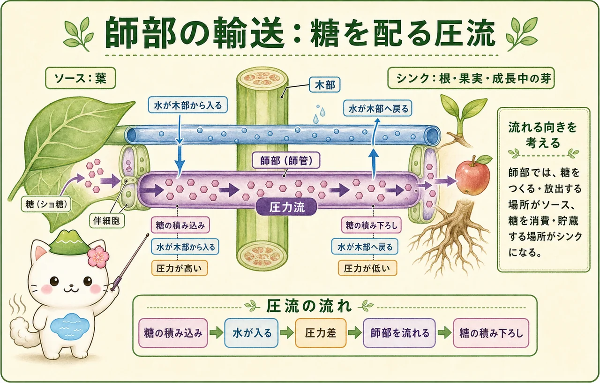

二つの長距離輸送系
維管束系には、主に木部と師部があります。木部は根から吸収した水と無機イオンを、根・茎・葉へと運ぶ道です。師部は、葉でつくられた糖などを、成長中の芽、根、果実、種子、貯蔵器官などへ配る道です。どちらも単なる管ではなく、周囲の細胞とともに、植物体の中の物質収支を調節しています。
木部の主要な通水細胞は、成熟すると中身の多くを失った中空の細胞で、丈夫な細胞壁をもちます。師部の師管要素は生きた細胞で、隣の伴細胞と協力して働きます。このつくりの違いは、二つの輸送が異なる原理で動くことと結びついています。
木部：水と無機イオンを上へ
根から木部へ渡った水と無機イオンは、葉の方向へ長距離を進みます。木部では、主に水の連続した柱が引っ張られることで流れが保たれます。葉から水が失われると、葉の細胞や細胞壁の水ポテンシャルが下がり、木部の水柱へ張力が伝わります。このため、根から葉までが連続した水の流れとしてつながります。
木部の流れは、根が水を押し上げる力だけで説明するものではありません。根圧が見られる条件はありますが、多くの陸上植物で日中の長距離輸送を支える主なしくみは、葉からの蒸散による引っ張りです。水分子どうしの凝集と、水が道管壁に付く付着が、細い導管の中で水柱を保つ助けになります。
蒸散が水柱を引く
葉の内部の水は、細胞表面から蒸発し、主に気孔を通って水蒸気として外へ出ます。これが蒸散です。蒸散は水を失う現象であると同時に、木部の水を上へ引く駆動力でもあります。土壌から大気へ向かう水ポテンシャルの勾配があるため、水は根・茎・葉を通って正味で移動します。
ただし、蒸散が大きいほど常によいわけではありません。乾燥した空気、強い光、風などは葉から水が失われやすい条件になります。水の供給が追いつかなければ、植物は気孔の開き方を調節して水分損失を抑えます。気孔の開閉と植物ホルモンは次の冊子以降で詳しく扱います。


木部の流れは「根が押す」というより、「葉が引く」と考えると見通しがよくなるよ。水柱が途中で切れずに続くことと、葉から水が出ていくことの両方が大切なんだ。
師部：糖をソースからシンクへ
師部は、光合成によって糖をつくる、または貯蔵物を放出する場所から、糖を消費・貯蔵する場所へ物質を運びます。送り出す側をソース、受け取る側をシンクと呼びます。よく働く葉はソースになり、伸びる芽、根、果実、種子はシンクになりやすい一方、発芽時の貯蔵器官のように、発達段階によって役割が入れ替わることもあります。
ソース側では糖（主にショ糖）が師管へ積み込まれます。すると師管内の水ポテンシャルが下がり、近くの木部から水が入りやすくなります。水が入ることで師部の圧力が高まり、師管の中で液体がシンク側へ流れます。シンク側で糖が積み下ろされると、水は木部へ戻り、圧力が下がります。これを圧流として説明します。

二つの輸送をつなげて読む
木部と師部は独立した二本の管ではありません。師部で糖が積み込まれるとき、水が木部から師部へ移り、シンクで糖が降ろされると水が木部側へ戻ります。根で吸収された無機イオンは木部で葉へ届き、葉でつくられた糖は師部で根へ届きます。根と葉は、二つの輸送系を通して互いに支え合っています。
また、師部の流れる向きは植物全体で常に一方向とは限りません。異なる師管要素では、どこがソースでどこがシンクかに応じて、別の方向に流れることがあります。大切なのは「上か下か」ではなく、その時点で何を送り出す場所から、何を必要とする場所へ運ぶかです。
木部は「水と無機イオン」、師部は「糖」と覚えたら、次は駆動力を分けて考えよう。木部は蒸散による張力、師部は糖の積み込み・積み下ろしで生じる圧力差が中心になるよ。
この冊子の要点
- 木部は主に水と無機イオンを根から葉へ、師部は糖などをソースからシンクへ運びます。
- 木部の長距離輸送は、葉からの蒸散がつくる張力と、凝集・付着に支えられます。
- 水は土壌から大気へ、水ポテンシャルの高い側から低い側へ正味で移動します。
- 師部では糖の積み込みで水が入り、圧力差が生じ、シンクでの積み下ろしまで圧流が続きます。
- 師部の方向は「上か下か」ではなく、ソースとシンクの組み合わせで決まります。
参照資料
- OpenStax Biology 2e：The Plant Body
- OpenStax Biology 2e：Stems
- Taiz et al., Plant Physiology and Development, Oxford University Press.